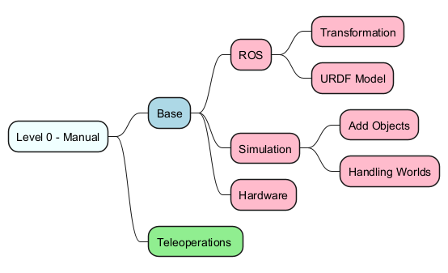

Topics
This chapter contains a list of topics that are relevant to the project. The topics are organized into autonomy categories, and each category contains a list of subtopics. The topics are not exhaustive, but they provide a good starting point for further exploration.
Topics overview
General Topics
This section provides an overview of the general topics that are relevant to the project. These topics are not specific to any level of autonomy, but they provide a foundation for understanding the project.
Level 0 Topics
This section provides an overview of the topics that are relevant to the Level 0 autonomy category. These topics are focused on manual control and basic robot operation.

Level 1 Topics
This section provides an overview of the topics that are relevant to the Level 1 autonomy category. These topics are focused on hands-off robot operation and autonomy.
Level 2 Topics
This section provides an overview of the topics that are relevant to the Level 2 autonomy category. These topics are focused on more advanced robot operation and autonomy.